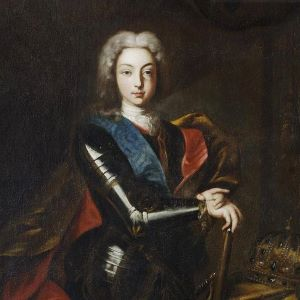
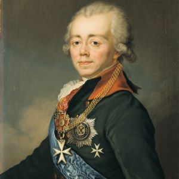

Российские императоры

Пётр I Великий
1721 - 1725
- Пётр I стал царем в 1682 году, получив поддержку стрельцов.
- Он провел реформы, направленные на модернизацию России и усиление ее военной мощи.
- Пётр I продолжил войну с Османской империей и Крымом, начав с Азовских походов.
- Великое посольство 1697-1698 годов было направлено на поиск союзников против Османской империи.
- Пётр I изучал кораблестроение, военное дело и другие науки во время своего путешествия по Европе.
- После возвращения из Великого посольства началась преобразовательная деятельность Петра, направленная на изменение внешних признаков и создание новой системы образования.
- Пётр ввел празднование Нового Года 1 января и ввел изменения в календарь.
- Военные реформы Петра привели к созданию Российской империи и усилению военной мощи страны.
Екатерина I
1725 - 1727
- Екатерина I была женой Петра I и матерью императрицы Елизаветы.
- Она имела восемь детей, но большинство из них умерли в детстве.
- Иностранцы отмечают привязанность Петра I к своей супруге.
- Екатерина была коронована Петром I в 1724 году.
- После смерти Петра I, трон России был отдан на волю случая, что привело к эпохе дворцовых переворотов.
- Народное большинство поддерживало великого князя Петра Алексеевича, внука Петра I.
- Екатерина I фактически передала власть князю и фельдмаршалу Меншикову и Верховному Тайному Совету.
- Она была заинтересована в делах флота и полагалась на своих советников в управлении государством.

Пётр II
1727 - 1730
- В 1727 году Петр II взошел на престол после смерти Екатерины I.
- Меншиков стал фактическим правителем России, сосредоточив власть в своих руках.
- Меншиков отменил некоторые налоги и провел реформы в налоговой системе.
- Введены изменения в управление Украиной, включая восстановление гетманства.
- Меншиков составил план обучения Петра II, включающий историю, географию, математику и другие предметы.
- Император предпочитал веселые забавы и охоту, а не обучение.
- Меншиков настроил против себя других представителей знати и самого государя.
- Строительство дворца Петра II началось на территории усадьбы Меншикова.

Анна Иоанновна
1730 - 1740
- Анна Иоанновна была избрана императрицей России после смерти Петра II.
- Верховный тайный совет решил ограничить власть императрицы специальными пунктами - "Кондициями".
- План был задуман как олигархический переворот, сосредоточивающий власть в руках представителей двух аристократических родов.
- Верховники ввели в состав Совета двух новых членов для усиления своих позиций.
- Анна Иоанновна подписала "Кондиции", ограничивающие ее власть без Верховного тайного совета.

Иван VI
1740 - 1741
- Иван VI Антонович был российским императором с октября 1740 по ноябрь 1741 года.
- Он был свергнут своей теткой, императрицей Елизаветой Петровной.
- Иван был арестован и изолирован от родителей в тюрьме, где его жизнь была строго ограничена.
- Закон об осуждении имени был принят, чтобы запретить упоминание имени Ивана Антоновича.
- В 1756 году Иван был перевезен в одиночную камеру в Шлиссельбургской крепости.
- В крепости Иван находился в полной изоляции и знал о своем царском происхождении.
- В 1764 году Иван был убит, когда подпоручик В. Я. Мирович пытался освободить его.
- Судьба останков Ивана VI остается неизвестной, но есть неподтвержденная версия их идентификации.
Елизавета Петровна
1741 - 1761
- Елизавета Петровна была императрицей России с 1741 по 1761 год.
- Она проводила политику стабильности и роста авторитета государственной власти.
- Елизавета Петровна способствовала развитию культуры и образования в России.
- Внешняя политика Елизаветы Петровны была направлена на укрепление России в международных отношениях.
- Россия участвовала в Семилетней войне (1756-1763), где противостояла Пруссии и другим европейским державам.
- Елизавета Петровна расширила границы империи на восток и проводила освоение новых территорий.

Пётр III
1761 - 1762
- Статья представляет собой отрывок из книги Якоба Штелина о воспитании великого князя Петра Фёдоровича.
- Штелин описывает различные аспекты обучения и развлечений великого князя, включая уроки, танцы и игры с оловянными солдатами.
- Принц также занимался практическими математическими дисциплинами, фортификацией и основами артиллерии.
- В ноябре 1742 года великий князь перешёл в православие и получил титул великого князя и наследника престола её императорского величества.
- Вскоре после принятия православия, шведская делегация прибыла в Россию с предложением принять корону Швеции после бездетного короля Фредрика I.
- Обучение в Петербурге стало более серьёзным, включая изучение математической географии, прагматической истории и фортификации.
- Великий князь получил большую тайную книгу под названием "Сила Империи", в которой были изображены все укрепления, принадлежащие к Русскому государству.

Екатерина II Великая
1762 - 1796
- Екатерина II свергла Петра III и стала императрицей России.
- Иностранная поддержка, возможно, сыграла роль в подготовке переворота.
- Екатерина II вступила на престол, ссылаясь на желание всех верноподданных.
- Правление Екатерины II характеризовалось сохранением и развитием тенденций, заложенных предшественниками.
- Административная и судебная реформы были проведены в середине царствования Екатерины II.
- Территория России существенно возросла за счет присоединения плодородных южных земель.
- Население возросло с 23,2 млн до 37,4 млн, Россия стала самой крупной европейской страной.
- Экономика России продолжала оставаться аграрной, с незначительным увеличением доли городского населения.
- В структуре экспорта преобладали сырье и полуфабрикаты, а в импорте - зарубежные промышленные изделия.

Павел I
1796 - 1801
- Павел I был сыном Екатерины II и Петра III, имел сложные отношения с матерью.
- Павел был женат дважды: на Наталье Алексеевне и Софии-Доротее Вюртембергской.
- Первый брак Павла с Натальей Алексеевной закончился ее смертью после родов.
- Екатерина II искала новую жену для Павла после смерти Натальи Алексеевны.
- Павел был безутешен после смерти своей первой жены и не присутствовал на ее похоронах.
- Второй брак Павла с Софией-Доротеей Вюртембергской был организован в том же году.

Александр I
1801 - 1825
- Александр I был российским императором с 1801 по 1825 годы.
- Он проводил реформы, направленные на модернизацию и укрепление государства.
- Введение военных поселений вызывало сопротивление крестьян и казаков.
- Александр I участвовал в войнах третьей коалиции и противостоял Наполеону.
- Он заключил Тильзитский мир с Францией, признавая территориальные изменения и присоединяясь к континентальной блокаде.
- Россия вела войны со Швецией и Турцией, а также участвовала в войне с персами.
- Отечественная война 1812 года началась, когда Наполеон вторгся в Россию.
Николай I
1825 - 1855
- Александр I умер, оставив двусмысленное положение междуцарствия.
- Николай Павлович принял трон согласно воле Александра I, несмотря на отказ брата Константина.
- Восстание декабристов произошло с целью либерализации российского общественно-политического строя.
- Николай I был коронован в Москве, несмотря на траур по скончавшейся вдовствующей императрице Елизавете Алексеевне.
- В царствование Николая I произошли важные события, такие как основание Третьего отделения тайной полиции и кодификация законов Российской империи.
- Николай I вел войны с Персией и Турцией, а также столкнулся с восстанием в Польше.
- Были проведены реформы, включая основание Технологического института в Петербурге и утверждение нового статуса Царства Польского в составе Российской империи.

Александр II
1855 - 1881
- Александр II был российским императором с 1855 по 1881 годы.
- Он провел реформы, включая отмену крепостного права и введение либеральной политики во внешней торговле.
- Экономический кризис начался в стране с начала 1860-х годов, связанный с отказом от промышленного протекционизма.
- Внешняя политика Александра II включала расширение Российской империи, присоединение Центральной Азии, Чечни и Черкесии.
- В царствование Александра II Россия продолжала политику расширения империи.
- Рост общественного недовольства характеризовал эпоху Александра II, включая увеличение крестьянских восстаний и появление революционных групп.

Александр III
1881 - 1894
- Александр III правил Российской империей с 1881 по 1894 годы.
- Он продолжил политику своего отца, Александра II, но с некоторыми изменениями.
- Реформы Александра III были направлены на укрепление самодержавия и усиление контроля над крестьянами.
- В области суда произошли изменения, ограничивающие судебную гласность и действия суда присяжных.
- Национальная и конфессиональная политика Александра III характеризовалась стремлением укрепить русские элементы страны и усилить православную религиозность.
- В царствование Александра III проводилась политика русификации на национальных окраинах.
- В отношении старообрядчества политика Александра III была противоречивой, приняв закон о старообрядцах, предоставляющий им легальный статус.
- Начало 1880-х годов ознаменовалось рядом позитивных мероприятий, направленных на облегчение положения народных масс.

Николай II
1894 - 1917
- Николай II правил Российской империей с 1894 по 1917 годы.
- Он проводил политику укрепления союза с Францией и прагматичного сотрудничества с Германией.
- Русская дипломатия вернулась к соглашениям, заключенным в Бельморале, после возвращения в Петербург.
- В 1897 году российские войска приняли участие в миротворческой операции на Крите после греко-турецкой войны.
- В период правления Николая II Россия достигла выдающихся результатов в естественнонаучном и инженерном образовании.
- В Российской империи происходил непрерывный рост количества людей, получающих высшее образование.
- Россия фактически стала пионером в области "непрерывного образования", сложившегося в 1907-1916 годах.
- В России наблюдался избыток женщин с высококачественным средним образованием, что приводило к их поступлению в западноевропейские университеты.